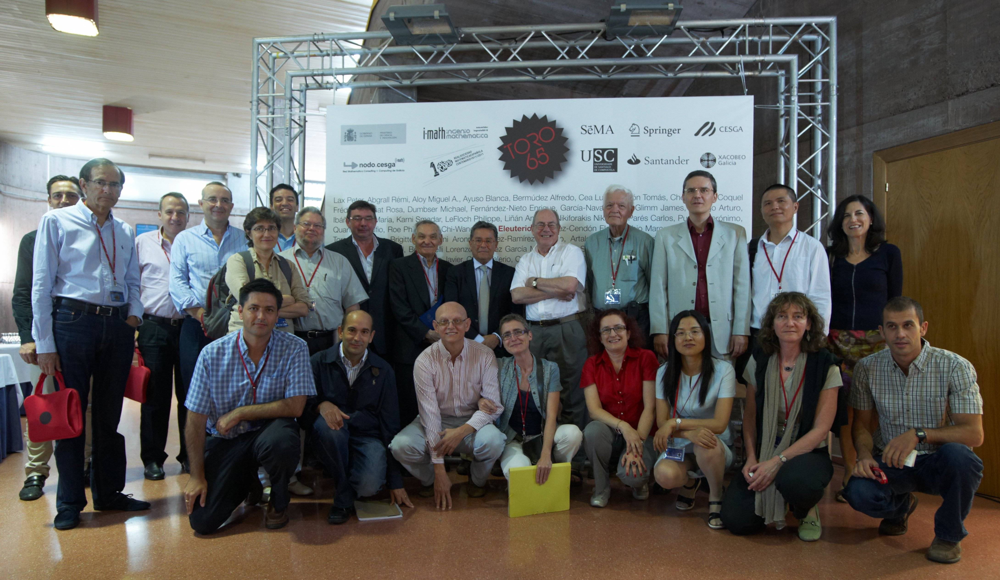

Ma Elena Vázquez Cendón
Universidade de Santiago de Compostela
Las personas que hemos tenido la fortuna de compartir Matemáticas con Eleuterio Francisco Toro sabemos que, además de ser un referente internacional en Resolventes de Riemann, es un ser humano admirable. Si además hemos podido departir con él en mesas con mantel, podemos dar fe de que ha sabido descentrar con éxito muchas adversidades.
El libro https://eleuteriotoro.com/exiliado_buckingham_palace, protagonista de la reseña, depende de variables espaciales y temporales que viven en el dominio de definición de nuestro amigo y que explican incógnitas, como su propio nombre, al que por ventura no renunció. En palabras suyas: «Recuento mis vivencias de niño campesino, maestro, estudiante universitario, líder estudiantil, prisionero, torturado, escapado, despatriado, exiliado, investigador matemático y catedrático».
Sin perder el humor chileno, próximo a la retranca gallega, nuestro amigo destina rigor científico de alto orden a la hora de reflexionar sobre «educación, la matemática en la escuela y en la vida; la investigación matemática y sus aplicaciones en diversas áreas del conocimiento humano, incluida la medicina».
Hace ya dos años invité a Tito a participar en el Consello da Cultura Galega en las jornadas tituladas Persoas refuxiadas ConCiencia. Análise da problemática das persoas refuxiadas desde a Ciencia e como persoas xeradoras de coñecemento, el título de su ponencia fue similar al del libro, cuya primera versión compartiera conmigo. En este enlace podéis escucharlo, presentado por uno de los personajes del libro, su hermano Gino, http://consellodacultura.gal/persoa.php?id=8294.
Recomiendo el libro a todas las generaciones, para compartir que la Ciencia es permeable a las vivencias de las personas que la desarrollan y valorar que, además de dedicarle tiempo a las publicaciones con las que compartimos nuestras aportaciones, son de agradecer aquellas en las que compartimos las reflexiones vitales que también producen Ciencia.
La memoria de este brillante académico conforma también la Matemática Aplicada por la que nuestra sociedad apuesta, al dar protagonismo a las personas que la desarrollan. Apelando a la memoria, comparto una foto del congreso en su honor que celebramos en Santiago de Compostela en 2011, con una importante presencia de miembros de la SEMA.
